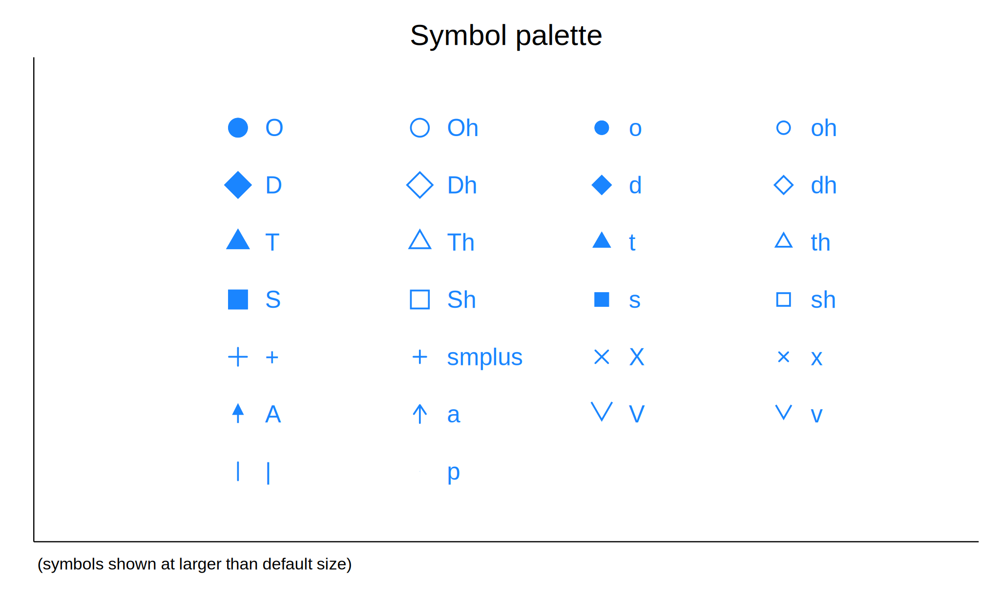

run_direct("""\
disp 1""", echo=True) # single-line Stata code. disp 1
1pystata/sfi functionality
For a diagram of the how the principal nbstata modules depend on this one, click here.
run_direct_cleaned is a run_direct/pystata.stata.run wrapper function that removes extraneous blank lines from the output.
When given multi-line Stata code, run_direct outputs an extra blank line at the start and two extra lines at the end:
We can clean it up like this:
. disp 1
1
. disp 2
2run_direct_cleaned also removes the blank line output by run_direct with quietly=True
Note however that run_direct_cleaned delays text output until the code finishes running:
1
2
1
2run_direct_cleaned may also misalign text output relative to graph output:

. disp "the problem arises with multi-line Stata code"
the problem arises with multi-line Stata code
. palette symbolpaletterun_sfi should only be used for standardized code in which each line is a command suitable for the sfi.SFIToolkit.stata function. For such code, it provides much faster execution (with a noecho option). But it shares the limitations of run_single.
Contains data
Observations: 5
Variables: 1
-------------------------------------------------------------------------------
Variable Storage Display Value
name type format label Variable label
-------------------------------------------------------------------------------
var1 float %9.0g
-------------------------------------------------------------------------------
Sorted by:
Note: Dataset has changed since last saved.Class for generating Stata select_var for getAsDict
Selectvar.varname is a temporary Stata variable for use in sfi.Data.getAsDict
varname: __000000
var1 __000000
1. 0 1
2. 0 1
3. 0 1
4. 1 0
5. 1 0
var1Class for generating Stata index var for use with pandas
The original motivation for adding this functionality is that run_direct/pystata.stata.run can only suppress the “echo” of single commands, not multi-line Stata code:
. disp "test 1"
test 1
. disp "test 2"
test 2
. As a workaround when echo is not desired, we can run multiple commands as a Stata program:
(Note: This and the following two functions assume input Stata code standardized by standardize_code, which will be ensured by the break_out_prog_blocks within the ultimate dispatch_run wrapper function.)
Not all code can be run within a program without modification, however: 1. Programs cannot be defined within another program, nor can python or mata blocks be run. 2. A program definition is a different scope for locals, so: * the program code does not have access to locals defined previously, and * locals set within the program code do not persist outside of it.
(These issues are addressed by run_noecho.)
In the “finally” block, the capture ensures that an error in the program define code doesn’t trigger another error in the “program drop” code due to the program not being defined (as in Issue #25):
The goal here is to get output from some Stata commands without changing the Stata environment. Three challenges arise:
r() return values requires special treatment because the log on/off commands needed to ensure this output is not logged are themselves r-class.std_code may also contain r-class commands.run_as_program-related challenges with regard to local variables.To start, we set aside the latter two issues and simply use run_direct to run the Stata code. We handle the first issue by running the log commands inside an r-class program with return add at the start.
A custom code runner may be specified. This may be useful if, for instance, the input std_code needs to access pre-existing r() results.
If we know the code we’re running is non-program code, we can get a speed improvement by running the log code together with the input std_non_prog_code.
Given a string ‘[%fmt] exp’, replicate the output of a Stata display command (for just the one display_directive): https://www.stata.com/help.cgi?display
inputs_outputs = [
('2+2', '4'),
('= 2+2', '4'),
('%9.2f 123.456', ' 123.46'),
('%9.2f = 123.456', ' 123.46'),
('% 9.2f 123.456', ' 123.46'),
('%10s = "Hello, World!"', 'Hello, World!'),
(' ', ''), # Empty input after stripping
]
for input_str, expected_result in inputs_outputs:
result = user_expression(input_str)
test_eq(result, expected_result)